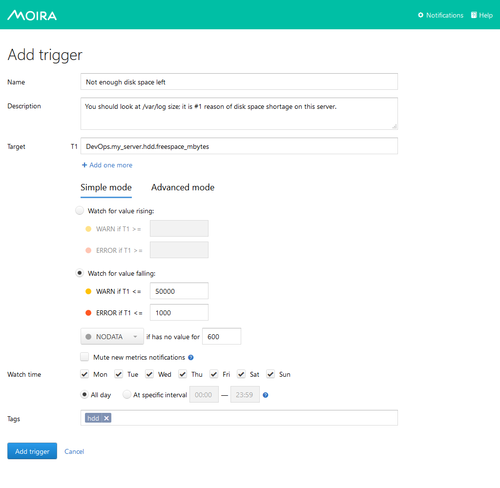
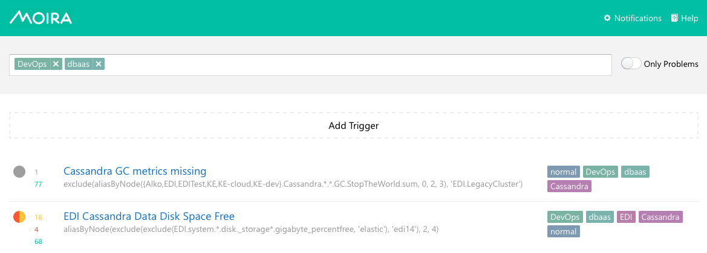

Simple Threshold Trigger¶
Let’s say you measure how much free space is left on your HDD and store
this value as DevOps.my_server.hdd.freespace_mbytes in Graphite.
Maybe you want to get an email when you have less than 50 GB left (it’s not
a big problem), and a Pushover notification when you have less than
1 GB left (you really need to delete something asap).
You can easily accomplish this by adding a trigger in Moira’s Simple Mode:
{kind=link}
Graphite Target¶
You can specify a single metric like we did here:
DevOps.my_server.hdd.freespace_mbytes.
You can also specify multiple metrics like DevOps.*.hdd.freespace_mbytes.
All metrics will be monitored separately, and you will get separate
notifications for each metric.
You can even use Graphite functions like
movingAverage(DevOps.my_server.hdd.freespace_mbytes, 10). Moira understands
everything that Graphite itself understands. See appropriate documentation.
Thresholds¶
In simple mode you need to at least one threshold values: WARNING and ERROR.
In our example we set both, lower values are bad, so we set warning threshold
greater than error threshold. In this case, Moira will consider any value less
than 50000 a warning and less than 1000 an error, which is what we want.
In other cases, you may need to consider large values a problem - then you
should make error threshold greater than warning and select
Watch for value rising option.
See also
You can set only one threshold. For example, you can set WARNING equal to 50000, omit ERROR and select Watch for value falling.
In this case you will receive only WARNING messages when free space goes under 50GB and never receive ERROR messages.
You can also do vise versa: set ERROR and omit WARNING.
Tags¶
In Moira, you cannot subscribe to a single trigger. Instead, you should categorize your triggers by tags and subscribe to a tag. It may look like an overkill here, but when you have dozens of triggers, you are much better off with tags, because you don’t have to enter your contact information over and over again. Tags also help to filter information on main screen:
{kind=link}
You can add as many tags as you want.
Subscriptions¶
Proceed to the Setting Up Your Subscriptions page to learn how to set up a subscription to your trigger.